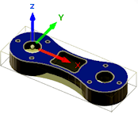
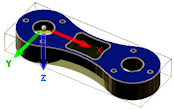
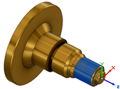
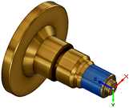

<div id="wcs_orientation_flipZ"><p>Inverte l'orientamento dell'asse Z di 180 gradi.</p>

<table class="tipTable" cellspacing="10">
<tr>
<td><center></center></td>
<td><center></center></td>
</tr><tr>
<td><center><p><b>Fresatura Z</b></p></center></td>
<td><center><p><b>Inverti Z di 180 gradi</b></p></center></td>
</tr></table>

<table class="tipTable" cellspacing="10">
<tr>
<td><center></center></td>
<td><center></center></td>
</tr><tr>
<td><center><p><b>Tornitura Z</b></p></center></td>
<td><center><p><b>Inverti Z di 180 gradi</b></p></center></td>
</tr></table>
</div>